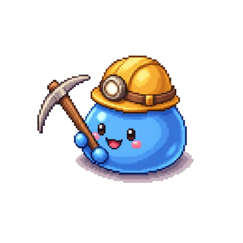

⛏️ 슬라임 지하 광산 굴착 RPG - 쿼터뷰 갱도 프로토타입
슬라임 광부
×
Lv.
1
/ Job Lv.1 / Exp.
0
%
HP
100/100
SP
50/50
슬라임 광부 ▾
지하 1층 갱도
(0, 0)
깊이 1m
일반 메시지
배틀 메시지
⛏️
50/50
🎒
🛡️
📖
가방
×
🏠 슬라임 쉼터
×
골드
0G
가방
0/15
곡괭이
Lv.1 (35/50)
💰 교환소
♨️ 온천
🔨 대장간
🎒 가방상점
🛠️ 일꾼관리소
🛗 엘리베이터
🏺 유물
광물 일괄 판매
환전 시세 — 암석/흙 1G · 철광석 5G · 미스릴 20G · 박쥐 날개 10G
쿨쿨...

휴식하기 (HP/SP 완전 회복)
곡괭이 수리
곡괭이 파워 강화
파워 강화 시 타격 한 번에 암반을 더 크게 깎습니다.
가방 확장
미니 일꾼 슬라임 고용
100G
현재 고용:
0
/3 · 갱도를 자유롭게 돌아다니며 인접한 암반을 알아서 캡니다.
현재 위치:
B1F
🛗 지하 심층으로 이동 (B
2
F)
바닥/암반이 새로 채워지고 암반이 더 단단해지는 대신 고급 광석이 더 잘 나옵니다. 골드·장비·진화·일꾼은 그대로 유지됩니다.
최대 2개까지 동시 장착할 수 있습니다.
갱도로 복귀 (Esc)
✨ 슬라임 진화!
Lv.
5
달성! 진화 형태를 하나 선택하세요.
🛡️
철갑 슬라임
채굴 공격력 +30%
(적은 타격으로 파괴)
💡
발광 슬라임
희귀 광물/미스릴
드랍 확률 +20%
🐌
거대 슬라임
가방 기본 슬롯
+15칸 증가
💤 어서오세요!
자리를 비운 동안 미니 일꾼들이 열심히 일했어요!
골드 +0G / 철광석 +0개 획득
확인
바닥을
좌클릭
하면 슬라임이 이동합니다.
암반(바위)
을 클릭하면 다가가서 자동으로 곡괭이질을 시작합니다.
부순 암반 자리에 떨어진
광물
은 슬라임이 다가가면 자동으로 줍습니다.
포탈
을 클릭하면 거점 상점이 열립니다. 진행 상황은 자동 저장됩니다.